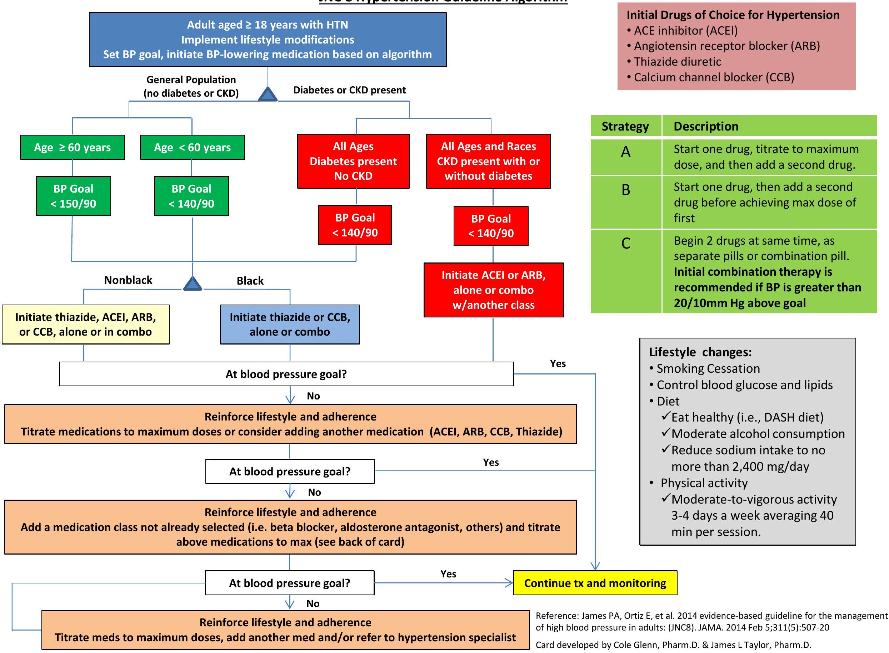

JNC 8 Quick Reference & Compelling Indications
JNC 8 Hypertension Guideline Algorithm

Compelling Indications
| Indication | Treatment Choice |
|---|---|
| Heart Failure | ACEI/ARB + BB + diuretic + spironolactone |
| Post-MI/Clinical CAD | ACEI/ARB AND BB |
| CAD | ACEI, BB, diuretic, CCB |
| Diabetes | ACEI/ARB, CCB, diuretic |
| CKD | ACEI/ARB |
| Recurrent stroke prevention | ACEI, diuretic |
| Pregnancy | labetolol (first line), nifedipine, methyldopa |
Hypertension Treatment Summary
Beta-1 Selective Beta-blockers
These are possibly safer in patients with COPD, asthma, diabetes, and peripheral vascular disease:
- metoprolol
- bisoprolol
- betaxolol
- acebutolol
| Drug Class | Agents of Choice | Comments |
|---|---|---|
| Diuretics |
HCTZ 12.5-50 mg, chlorthalidone 12.5-25 mg, indapamide 1.25-2.5 mg triamterene 100 mg K+ sparing - spironolactone 25-50 mg, amiloride 5-10 mg, triamterene 100 mg furosemide 20-80 mg twice daily, torsemide 10-40 mg |
Monitor for hypokalemia Most SE are metabolic in nature Most effective when combined w/ ACEI Stronger clinical evidence w/chlorthalidone Spironolactone - gynecomastia and hyperkalemia Loop diuretics may be needed when GFR <40 mL/min |
| ACEI/ARB |
ACEI: lisinopril, benazapril, fosinopril and quinapril 10-40 mg, ramipril 5-10 mg , trandolapril 2-8 mg ARB: candesartan 8-32 mg, valsartan 80-320 mg, losartan 50-100 mg, olmesartan 20-40 mg, telmisartan 20-80 mg |
SE: Cough (ACEI only), angioedema (more with ACEI), hyperkalemia Losartan lowers uric acid levels; candesartan may prevent migraine headaches |
| Beta-Blockers | metoprolol succinate 50-100 mg and tartrate 50-100 mg twice daily, nebivolol 5-10 mg, propranolol 40-120 mg twice daily, carvedilol 6.25-25 mg twice daily, bisoprolol 5-10 mg, labetalol 100-300 mg twice daily, |
Not first line agents - reserve for post-MI/CHF Cause fatigue and decreased heart rate Adversely affect glucose; mask hypoglycemic awareness |
| Calcium channel blockers |
Dihydropyridines: amlodipine 5-10 mg, nifedipine ER 30-90 mg, Non-dihydropyridines: diltiazem ER 180-360 mg, verapamil 80-120 mg 3 times daily or ER 240-480 mg |
Cause edema; dihydropyridines may be safely combined w/ B-blocker Non-dihydropyridines reduce heart rate and proteinuria |
| Vasodilators |
hydralazine 25-100 mg twice daily, minoxidil 5-10 mg terazosin 1-5 mg, doxazosin 1-4 mg given at bedtime |
Hydralazine and minoxidil may cause reflex tachycardia and fluid retention - usually require diuretic + B-blocker Alpha-blockers may cause orthostatic hypotension |
| Centrally-acting Agents |
clonidine 0.1-0.2 mg twice daily, methyldopa 250-500 mg twice daily guanfacine 1-3 mg |
Clonidine available in weekly patch formulation for resistant hypertension |